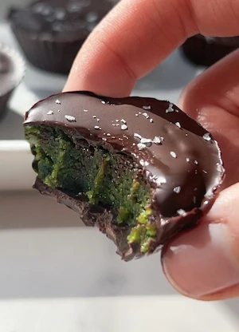

Matcha Chocolate Cups (No Bake) (just 4 healthy ingredients!)
if you're a matcha lover and you haven't made these yet, please drop everything and make these matcha chocolate cups! just four ingredients, no oven and you probably have everything already. taste wise, think: reese's cups minus the peanut butter and adding in a whole lot of matcha goodness. the filling is soft and chewy just like my 3 ingredient healthy reese's cups but full of that earthy matcha flavour. they are gluten free, vegan, refined sugar free, and one of the easiest things you can keep stocked in your freezer for whenever a sweet craving hits.
the base of the filling is almond flour and it's such a good ingredient to work with in no bake recipes. it has a naturally slightly sweet, nutty flavour that works really well with matcha, and when blended with dates it comes together into a soft, fudgy, dough-like texture that holds its shape well once cold. nutritionally, almond flour is a great swap from regular flour because it's high in vitamin E (a powerful antioxidant), rich in healthy monounsaturated fats, and a solid source of plant-based protein. it also keeps the recipe naturally gluten free and it is safe to eat raw unlike regular flour.
the dates are what bind everything together and add all the natural sweetness. like in my three ingredient peanut butter cups, i love using medjool dates here because they're soft, large and have that almost caramel flavour that pairs so beautifully with matcha. they're also rich in fibre, potassium, and antioxidants with anti-inflammatory properties, which means you can feel good about satisfying your sweet tooth with these matcha chocolate cups. the recipe calls for 70g to 110g depending on the size and how soft/sticky your dates are. start with 70g and add more if the dough feels too dry or isn't coming together properly.
this recipe is all about the matcha… so if you are in team "matcha tastes like grass", this one really isn't for you (sorry!) but if you are obsessed with matcha like me then you have found your new fave hyper fixation dessert. you can adjust the amount of matcha used depending on your personal preference, start with one tablespoon, taste the dough, and go from there. (since it's a no bake recipe you can taste the dough raw as you go) you can work your way up to 1.5 or 2 tablespoons which considering the batch size is quite a lot but it does take a little bit of matcha to cut through the flavour of the dates. i found 1 tablespoon to be the perfect amount without being too overpowering and over caffeinating me but feel free to adjust to your tolerance. matcha is really packed with goodness. it's rich in catechins, a type of antioxidant, and contains L-theanine which supports calm, focused energy without the jittery crash you can get from coffee. just be cautious if you are anemic or iron deficient. so… while these matcha chocolate cups taste like a total treat, the ingredients are all doing something good for you (which we love)
the dark chocolate shell is what brings everything together and gives you that cup moment. i use a 70% dark chocolate because it's rich and slightly bitter in a way that balances the sweetness of the matcha and date filling perfectly. dark chocolate at this percentage is also high in flavonoids, which are plant compounds with well-studied anti-inflammatory and antioxidant properties. if you find 70% too intense, anything from 60% upwards works well, and a dairy-free milk chocolate is a great option if you want something a little sweeter.
the method is really straightforward. blend the almond flour, dates and matcha in a food processor until you get a soft, slightly sticky dough. melt the dark chocolate and add a teaspoon to the base of each mini cupcake mold, flash freeze for five minutes to set, then press the matcha dough into each mold and cover with more melted chocolate. back into the freezer until fully set. i like to add a tiny pinch of flaky salt on top just after the final chocolate layer sets because it adds just the right touch of savoury and looks so pretty. i use mini silicone cups, note that the amount of cups you make will vary on the size of your mold. i prefer mini to regular size molds as these matcha chocolate cups are quite rich and minis have my heart for the obvious cuteness factor.
these matcha chocolate cups are perfect eaten straight from the freezer and keep really well in an airtight container for up to a month, making them such a great batch recipe to have on hand. if you want them a little softer, leave them at room temperature for five minutes before eating. and if you love a no bake matcha treat, you have to check out my matcha cheesecake stuffed dates too, another four ingredient no bake recipe that is just as easy and just as delicious. or my 4 ingredient matcha marshmallows, clearly i have been lovin the 4 ingredient matcha sweet treats lately!
Frequently Asked Questions
How do I store these matcha chocolate cups and how long do they last?
Store in an airtight container in the freezer for up to one month. they can also be kept in the fridge for up to a week but will be softer at fridge temperature. serve straight from the freezer for that firm chocolatey shell, or leave at room temperature for five minutes if you prefer them slightly softer and more fudgy.
What type of dates work best in desserts?
Medjool dates are the best choice here because they're naturally very soft and sticky, which is exactly what you need to bind the dough together without needing any added liquid or sweetener. if your medjool dates feel a little dry, soak them in warm water for 10 minutes, pat dry, and they'll blend much more smoothly. deglet noor dates will work but they're drier and less sweet so the dough may be a little crumblier.
How much matcha should I use?
Start with one tablespoon and taste the dough before adding more. matcha varies quite a lot in intensity between brands, so what feels like a lot in one brand might be quite subtle in another. one tablespoon gives a gentle, background matcha flavour and two gives something more vibrant and earthy. adjust to your own taste and preference.
Can I make these matcha chocolate cups without a food processor?
A food processor or high powered blender really is the best tool here because the dates need to be broken down and fully combined with the almond flour. if you don't have one, make sure your dates are very soft, almost paste-like, and mash them thoroughly by hand before mixing in the almond flour and matcha. the texture will be slightly chunkier but the recipe will still work.
Why is my dough too crumbly and not coming together?
This usually means your dates aren't soft or sticky enough, or you need more of them. add more dates a little at a time (up to 110g) and blend again. if the dough is still not coming together after that, add half a teaspoon of water at a time until it forms a cohesive ball that holds its shape when pressed.
Are these matcha chocolate cups vegan?
Yes, as long as you use a dairy-free dark chocolate they are completely vegan. most 70% dark chocolate is naturally dairy free but always check the label to be sure, especially if you need to avoid cross contamination.
Are these matcha chocolate cups gluten free?
Yes, all four ingredients are naturally gluten free. almond flour contains no gluten, and dates, matcha and dark chocolate are all gluten free. just double check the label on your chocolate to be sure if you have coeliac disease or high sensitivity.
Pro Tips
- Use soft, fresh medjool dates for the smoothest dough.
- Start with 1 tablespoon of matcha then add more to your preference.
- Flash freeze the base chocolate layer for the full five minutes before adding the dough so you get clean, defined layers.
- Use a silicone mini muffin mold if you have one as the cups pop out much more easily than a metal tin.
- Opt for organic ceremonial grade matcha for the best taste and colour.
Matcha Chocolate Cups (No Bake)

Ingredients
Instructions
- Step 1: Add the almond flour, dates and matcha to a high powered food processor or blender and mix until fully combined into a soft dough. Start with 70g of soft pitted dates and increase as needed until the dough can be formed in your hands.
- Step 2: Melt the dark chocolate.
- Step 3: Add a teaspoon of melted chocolate to the base and sides of each mini cupcake mold and flash freeze for 5 minutes until set.
- Step 4: Roll the matcha dough into rough balls, press one into each mold, and cover with more melted chocolate.
- Step 5: Place in the freezer for 20 to 30 minutes or until fully set, then gently remove from the molds.
- Step 6: Sprinkle with flaky salt and enjoy.
did you make this recipe?
snap a pic & tag @yourwellnessgirly so i can see! i'd love to hear how it went, share ur thoughts and leave a star rating!
Nutrition Facts
Per one serving:
*Nutritional information is estimated and will vary depending on the ingredients and brands you use. Basic macros don't reflect the full nutritional value including vitamins, minerals, antioxidants, and other beneficial compounds. Please use this as a guideline only.
Reviews
Be the first to leave a review
Leave a review
Thanks for your review! It's now live. 💗
No reviews yet — be the first!